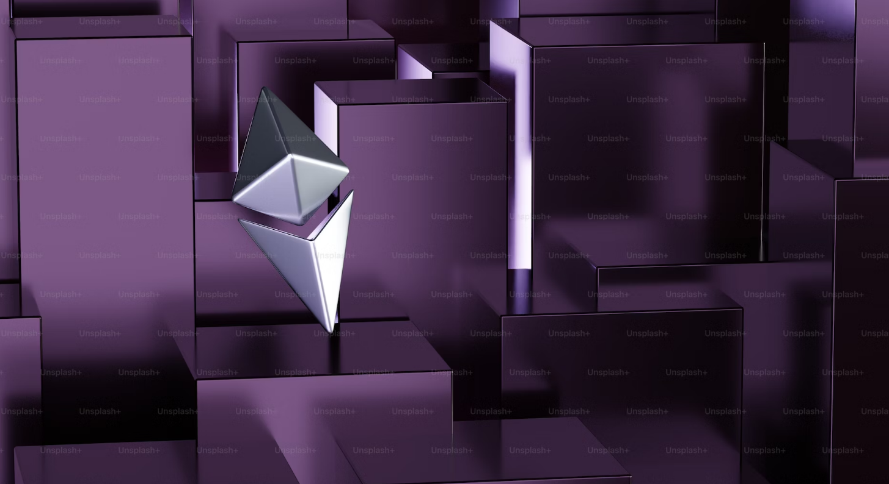

The Solution.
What is web 3.0?
Web 3.0, often referred to as the "Decentralized Web," represents the next evolutionary phase of the internet. It builds upon the foundations of Web 2.0, which brought about user-generated content and social media platforms. However, Web 3.0 takes this concept further by incorporating decentralization, blockchain technology, and enhanced user experiences.
Key Features of Web 3.0:
- Decentralization: Unlike the current centralized web, Web 3.0 aims to distribute power and control back to users. It leverages decentralized technologies like blockchain to create peer-to-peer networks, removing the need for intermediaries and enhancing security, privacy, and censorship resistance.
- Smart Contracts: Web 3.0 introduces smart contracts, self-executing contracts with predefined rules and conditions. These contracts operate on blockchain networks, allowing for trustless transactions, automated processes, and improved transparency in various domains, such as finance, supply chain, and digital rights management.
- Interoperability: Web 3.0 aims to bridge the silos between different applications and platforms. By adopting open standards and protocols, it enables seamless data exchange and interaction between various decentralized applications (dApps), creating a more connected and user-centric online environment.
- Enhanced User Experiences: Web 3.0 focuses on improving user experiences by providing personalized and context-aware services. With the help of artificial intelligence, machine learning, and data analytics, it enables tailored content, intuitive interfaces, and proactive assistance, adapting to the user's preferences and needs.
Transformative Potential: The emergence of Web 3.0 brings forth numerous transformative opportunities across various industries:
- Finance: Web 3.0 facilitates decentralized finance (DeFi) platforms, enabling peer-to-peer transactions, automated asset management, and inclusive financial services without intermediaries.
- Governance: Web 3.0 introduces decentralized governance models, empowering communities to make collective decisions through voting mechanisms and ensuring transparency and fairness.
- Data Ownership and Privacy: Web 3.0 empowers individuals by granting them greater control over their personal data. Through decentralized identity solutions and data marketplaces, users can selectively share data while maintaining privacy and ownership.
- Supply Chain and Logistics: Web 3.0 enables end-to-end traceability and transparency in supply chains, reducing fraud, enhancing product authenticity, and optimizing logistics operations.

Will the Flux project one day compete with amazon web services, and major VSP providers?
Flux decentralized infrastructure offers a promising solution to some of the challenges and limitations posed by traditional centralized systems. By leveraging the power of decentralized networks, Flux aims to create a more resilient, secure, and inclusive infrastructure for various applications and services. At its core, Flux employs a peer-to-peer architecture that enables the distribution of resources, data, and computing power across a network of participants. This decentralized approach eliminates the single point of failure present in centralized systems, making the infrastructure more robust and resistant to disruptions caused by hardware failures, cyberattacks, or censorship attempts.
One of the key benefits of Flux decentralized infrastructure is its ability to foster trust and transparency. By removing the need for intermediaries and centralized authorities, Flux enables direct interactions between participants, promoting a peer-to-peer network where consensus mechanisms ensure the validity and integrity of transactions and data. This empowers individuals and communities, reducing their reliance on centralized entities and giving them greater control over their own data and digital assets. Additionally, Flux aims to address scalability challenges by leveraging distributed computing and storage capabilities. Through a network of interconnected nodes, Flux can harness the collective resources of participants, enabling efficient resource allocation and load balancing. This scalability opens up new possibilities for handling large volumes of data, supporting complex applications, and accommodating growing user demands without sacrificing performance.
Moreover, Flux decentralized infrastructure champions the principles of openness and inclusivity. By allowing anyone to participate in the network as a node operator or user, Flux fosters a collaborative ecosystem where individuals and organizations can contribute, share resources, and benefit from the services provided. This democratization of infrastructure empowers diverse stakeholders, promotes innovation, and reduces barriers to entry, ultimately leading to a more vibrant and inclusive digital landscape. While still in its early stages, Flux decentralized infrastructure holds great potential to revolutionize various industries and reshape the way we interact with digital systems. As the technology continues to evolve and gain adoption, it has the capacity to create a more resilient, secure, and equitable digital infrastructure that aligns with the principles of decentralization and empowers individuals and communities in the digital age.
Preserving net neutrality and preventing excessive ISP control is crucial for maintaining an open, competitive, and inclusive internet ecosystem. It requires strong regulatory frameworks that uphold the principles of net neutrality, promote competition, protect consumer rights, and ensure equal access to information and services for all individuals, regardless of their financial means or the size of their online presence.